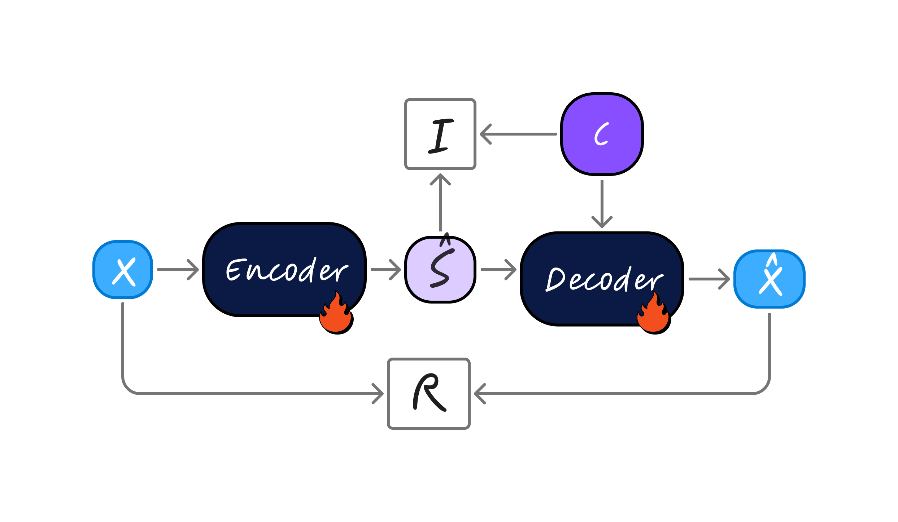

Anonymous
Speaker conversion samples

Independence-based Voice Conversion (IVC) consists of an encoder predicting content-like latent variable Ŝ and a decoder conditioned on speaker, or pitch signal C. The model is trained with discrepancy loss R and independence loss I.
Conditional generation and disentangled representation learning are central to controlled generation across audio, vision, and multimodal domains. However, despite strong empirical progress, particularly in speech style transfer, most existing approaches rely on heuristic objectives and architectural choices, offering limited theoretical understanding of when and why reliable attribute control is achievable. In this work, we develop a formal framework for speech attribute conversion and provide a theoretical analysis of sufficient conditions under which exact and consistent transfer is possible. Our analysis focuses on a deterministic autoencoder setting augmented with an independence constraint between the learned latent representation and the controllable attribute. Under explicit population-level assumptions on the data-generating process, we establish guarantees that link reconstruction, independence, and the feasibility of attribute manipulation while preserving task-relevant content. We complement the theoretical results with empirical evaluations on the voice and pitch conversion tasks, showing that the proposed framework achieves competitive performance in practical speech style transfer settings.
10 source speakers, 3 utterances per speaker, and 3 target speakers per utterance for a total of 90 examples. Each utterance uses a different target-speaker trio. Each row contains the original source utterance, a reference utterance from the target speaker, and the converted result.
| Source | Target (reference) | Converted |
|---|